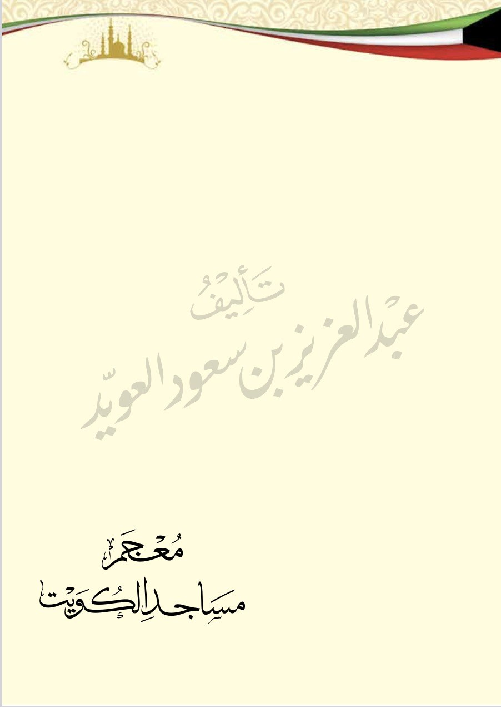
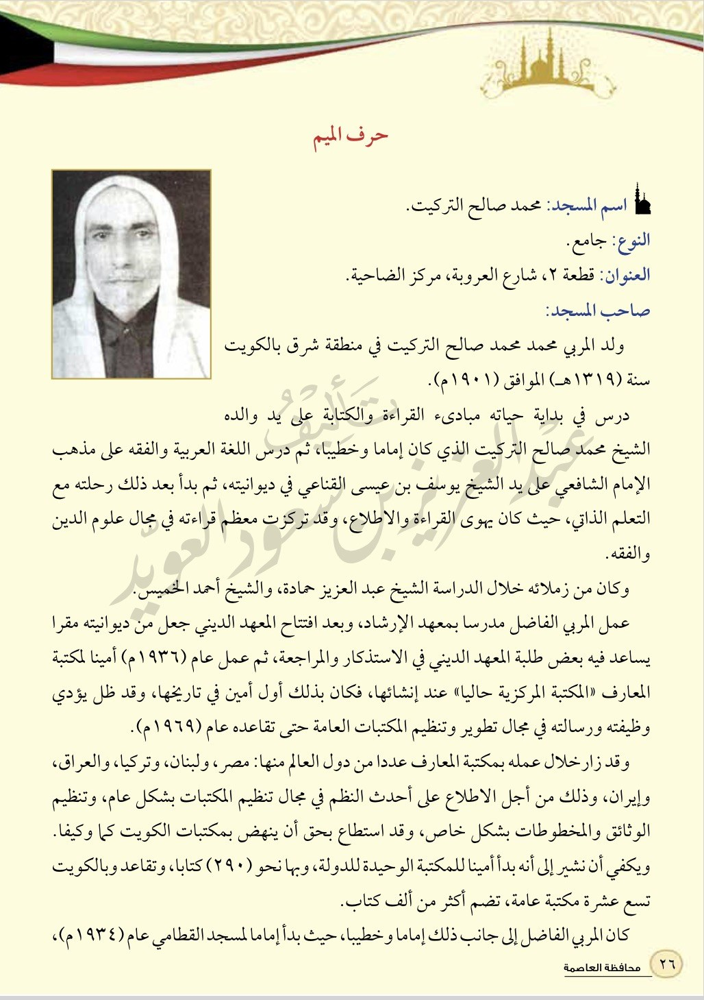

Book on the mosques of Kuwait, published after 2007 · Book pages, Abdulaziz bin Saud Al-Owaid, Mu'jam Masajid Al-Kuwait, Capital Governorate
Masjid Al-Qatami, its imam from 1934, and Masjid Mariam Abdulaziz Al-Qatami, in Al-Owaid's Mu'jam Masajid Al-Kuwait
What it is
Page 80, under the letter Qaf: «Mosque name: Al-Qatami. Type: masjid. Address: plot 1, Arabian Gulf Street.» It stood in Sharq, in Hay Al-Roumi, near the diwan of Hussein and Shamlan, sons of Ali bin Saif Al-Roumi, the building of Bishr bin Yousef Al-Roumi, the Al-Turkait building, and, page 81, «the house of Abdulwahab Abdulaziz Al-Qatami facing it on the east side», with the old Political Agency, Dickson House, close by. Today it overlooks the Arabian Gulf near the Ministry of Public Health and behind the Al-Shamlan diwan. It was founded in 1250 AH (1834) by Malka bint Mohammed Ghanim Al-Jabr Al-Ghanim, near her house, «as written on the plaque on the door of the mosque»; another view names Sultan bin Majid as founder, but he was its muezzin, not its founder (citing Adnan Al-Roumi, Tarikh Masajid Al-Kuwait, p. 192). Page 26 says the educator Mohammed Mohammed Saleh Al-Turkait (born 1901) began as imam of Masjid Al-Qatami in 1934. Page 89: «Masjid Mariam Abdulaziz Al-Qatami», plot 2, street 22, Shuwaikh residential. The benefactor Mariam Abdulaziz Abdulwahab Al-Qatami was born in Kuwait in 1920, studied in the kuttab, and married the late Yousef Eissa Al-Qatami; their sons are Faisal, Mohammed, Anwar, Walid and Qatami, with four daughters. The mosque was founded in 2007; the source given is her son Faisal Yousef Al-Qatami.
Why it matters
The mosque entry repeats the founding plaque of 1834 and places the house of the Al-Qatami family facing the mosque, and a second mosque bears the name of Mariam Abdulaziz Al-Qatami, with her birth year and family given by her son Faisal.
Page copies


Notes
Only the first pages are shown here. Family members who sign in can see all 5 pages.
Others named
Sources
Abdulaziz bin Saud Al-Owaid, Mu'jam Masajid Al-Kuwait, Capital Governorate, pages 26, 80, 81 and 89
How this text was made: The year of publication is not on the pages sent; the book records a mosque founded in 2007. It names the house facing the mosque as that of Abdulwahab Abdulaziz Al-Qatami, while Ma'alim part 7 gives Abdulaziz bin Abdulwahab.
Open in the interactive site